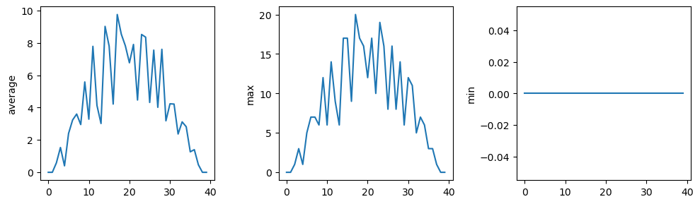

3 + 5 * 423This blog has been produced after working through the Programming with Python lessons provided by Data Carpentry.
The best way to learn how to program is to do something useful, so this introduction to Python is built around a common scientific task: data analysis.
Our imaginary colleague “Dr. Maverick” has invented a new miracle drug that promises to cure arthritis inflammation flare-ups after only 3 weeks since initially taking the medication! Naturally, we wish to see the clinical trial data, and after months of asking for the data they have finally provided us with a CSV spreadsheet containing the clinical trial data.
The CSV file contains the number of inflammation flare-ups per day for the 60 patients in the initial clinical trial, with the trial lasting 40 days. Each row corresponds to a patient, and each column corresponds to a day in the trial. Once a patient has their first inflammation flare-up they take the medication and wait a few weeks for it to take effect and reduce flare-ups.
To see how effective the treatment is we would like to:
The data sets are stored in comma-separated values (CSV) format:
The first three rows of our first file look like this:
Each number represents the number of inflammation bouts that a particular patient experienced on a given day. For example, value “6” at row 3 column 7 of the data set above means that the third patient was experiencing inflammation six times on the seventh day of the clinical study.
In order to analyze this data and report to our colleagues, we’ll have to learn a little bit about programming.
Any Python interpreter can be used as a calculator:
3 + 5 * 423This is great but not very interesting. To do anything useful with data, we need to assign its value to a variable. In Python, we can assign a value to a variable, using the equals sign =. For example, we can track the weight of a patient who weighs 60 kilograms by assigning the value 60 to a variable weight_kg:
weight_kg = 60From now on, whenever we use weight_kg, Python will substitute the value we assigned to it. In layperson’s terms, a variable is a name for a value.
In Python, variable names:
This means that, for example:
Python knows various types of data. Three common ones are:
In the example above, variable weight_kg has an integer value of 60. If we want to more precisely track the weight of our patient, we can use a floating point value by executing:
weight_kg = 60.3To create a string, we add single or double quotes around some text. To identify and track a patient throughout our study, we can assign each person a unique identifier by storing it in a string:
patient_id = '001'Once we have data stored with variable names, we can make use of it in calculations. We may want to store our patient’s weight in pounds as well as kilograms:
weight_lb = 2.2 * weight_kgWe might decide to add a prefix to our patient identifier:
patient_id = 'inflam_' + patient_idTo carry out common tasks with data and variables in Python, the language provides us with several built-in functions. To display information to the screen, we use the print function:
print(weight_lb)
print(patient_id)132.66
inflam_inflam_001When we want to make use of a function, referred to as calling the function, we follow its name by parentheses. The parentheses are important: if you leave them off, the function doesn’t actually run! Sometimes you will include values or variables inside the parentheses for the function to use. In the case of print, we use the parentheses to tell the function what value we want to display. We will learn more about how functions work and how to create our own in later sections.
We can display multiple things at once using only one print call:
print(patient_id, 'weight in kilograms:', weight_kg)inflam_inflam_inflam_001 weight in kilograms: 60.3We can also call a function inside of another function call. For example, Python has a built-in function called type that tells you a value’s data type:
print(type(60.3))
print(type(patient_id))<class 'float'>
<class 'str'>Moreover, we can do arithmetic with variables right inside the print function:
print('weight in pounds:', 2.2 * weight_kg)weight in pounds: 132.66The above command, however, did not change the value of weight_kg:
print(weight_kg)60.3To change the value of the weight_kg variable, we have to assign weight_kg a new value using the equals = sign:
weight_kg = 65.0
print('weight in kilograms is now:', weight_kg)weight in kilograms is now: 65.0A variable in Python is analogous to a sticky note with a name written on it: assigning a value to a variable is like putting that sticky note on a particular value. Using this analogy, we can investigate how assigning a value to one variable does not change values of other, seemingly related, variables. For example, let’s store the subject’s weight in pounds in its own variable:
# There are 2.2 pounds per kilogram
weight_lb = 2.2 * weight_kg
print('weight in kilograms:', weight_kg, 'and in pounds:', weight_lb)weight in kilograms: 65.0 and in pounds: 143.0Similar to above, the expression 2.2 * weight_kg is evaluated to 143.0, and then this value is assigned to the variable weight_lb (i.e. the sticky note weight_lb is placed on 143.0). At this point, each variable is “stuck” to completely distinct and unrelated values.
Let’s now change weight_kg:
weight_kg = 100.0
print('weight in kilograms is now:', weight_kg, 'and weight in pounds is still:', weight_lb)weight in kilograms is now: 100.0 and weight in pounds is still: 143.0Since weight_lb doesn’t “remember” where its value comes from, it is not updated when we change weight_kg.Python allows you to assign multiple values to multiple variables in one line by separating the variables and values with commas.
first, second = 'Grace', 'Hopper'
third, fourth = second, first
print(third, fourth)Hopper Graceplanet = 'Earth'
apples = 5
distance = 10.5print(type(planet))
print(type(apples))
print(type(distance))<class 'str'>
<class 'int'>
<class 'float'>import numpynumpy.loadtxt(fname='Data/inflammation-01.csv', delimiter=',')array([[0., 0., 1., ..., 3., 0., 0.],
[0., 1., 2., ..., 1., 0., 1.],
[0., 1., 1., ..., 2., 1., 1.],
...,
[0., 1., 1., ..., 1., 1., 1.],
[0., 0., 0., ..., 0., 2., 0.],
[0., 0., 1., ..., 1., 1., 0.]])The expression numpy.loadtxt(…) is a function call that asks Python to run the function loadtxt which belongs to the NumPy library. The dot notation in Python is used most of all as an object attribute/property specifier or for invoking its method. object.property will give you the object.property value, object_name.method() will invoke on object_name method.
As an example, John Smith is the John that belongs to the Smith family. We could use the dot notation to write his name smith.john, just as loadtxt is a function that belongs to the numpy library.
numpy.loadtxt has two parameters: - the name of the file we want to read and - the delimiter that separates values on a line.
These both need to be character strings (or strings for short), so we put them in quotes.
Since we haven’t told it to do anything else with the function’s output, the notebook displays it. In this case, that output is the data we just loaded. By default, only a few rows and columns are shown (with … to omit elements when displaying big arrays). Note that, to save space when displaying NumPy arrays, Python does not show us trailing zeros, so 1.0 becomes 1..
Our call to numpy.loadtxt read our file but didn’t save the data in memory. To do that, we need to assign the array to a variable. In a similar manner to how we assign a single value to a variable, we can also assign an array of values to a variable using the same syntax. Let’s re-run numpy.loadtxt and save the returned data:
data = numpy.loadtxt(fname='Data/inflammation-01.csv', delimiter=',')This statement doesn’t produce any output because we’ve assigned the output to the variable data. If we want to check that the data have been loaded, we can print the variable’s value:
print(data)[[0. 0. 1. ... 3. 0. 0.]
[0. 1. 2. ... 1. 0. 1.]
[0. 1. 1. ... 2. 1. 1.]
...
[0. 1. 1. ... 1. 1. 1.]
[0. 0. 0. ... 0. 2. 0.]
[0. 0. 1. ... 1. 1. 0.]]Now that the data are in memory, we can manipulate them. First, let’s ask what type of thing data refers to:
print(type(data))<class 'numpy.ndarray'>The output tells us that data currently refers to an N-dimensional array, the functionality for which is provided by the NumPy library. These data correspond to arthritis patients’ inflammation. The rows are the individual patients, and the columns are their daily inflammation measurements.
A Numpy array contains one or more elements of the same type. The type function will only tell you that a variable is a NumPy array but won’t tell you the type of thing inside the array. We can find out the type of the data contained in the NumPy array:
print(data.dtype)float64This tells us that the NumPy array’s elements are floating-point numbers. With the following command, we can see the array’s shape:
print(data.shape)(60, 40)The output tells us that the data array variable contains 60 rows and 40 columns. When we created the variable data to store our arthritis data, we did not only create the array; we also created information about the array, called members or attributes. This extra information describes data in the same way an adjective describes a noun. data.shape is an attribute of data which describes the dimensions of data. We use the same dotted notation for the attributes of variables that we use for the functions in libraries because they have the same part-and-whole relationship.
If we want to get a single number from the array, we must provide an index in square brackets after the variable name, just as we do in math when referring to an element of a matrix. Our inflammation data has two dimensions, so we will need to use two indices to refer to one specific value:
print('first value in data:', data[0, 0])first value in data: 0.0print('middle value in data:', data[30, 20])middle value in data: 13.0The expression data[30, 20] accesses the element at row 30, column 20. While this expression may not surprise you, data[0, 0] might. Programming languages like Fortran, MATLAB and R start counting at 1 because that’s what human beings have done for thousands of years. Languages in the C family (including C++, Java, Perl, and Python) count from 0 because it represents an offset from the first value in the array (the second value is offset by one index from the first value). This is closer to the way that computers represent arrays (if you are interested in the historical reasons behind counting indices from zero, you can read Mike Hoye’s blog post). As a result, if we have an M×N array in Python, its indices go from 0 to M-1 on the first axis and 0 to N-1 on the second. It takes a bit of getting used to, but one way to remember the rule is that the index is how many steps we have to take from the start to get the item we want. 
What may also surprise you is that when Python displays an array, it shows the element with index [0, 0] in the upper left corner rather than the lower left. This is consistent with the way mathematicians draw matrices but different from the Cartesian coordinates. The indices are (row, column) instead of (column, row) for the same reason, which can be confusing when plotting data.
An index like [30, 20] selects a single element of an array, but we can select whole sections as well. For example, we can select the first ten days (columns) of values for the first four patients (rows) like this:
print(data[0:4, 0:10])[[0. 0. 1. 3. 1. 2. 4. 7. 8. 3.]
[0. 1. 2. 1. 2. 1. 3. 2. 2. 6.]
[0. 1. 1. 3. 3. 2. 6. 2. 5. 9.]
[0. 0. 2. 0. 4. 2. 2. 1. 6. 7.]]The slice 0:4 means, “Start at index 0 and go up to, but not including, index 4”. Again, the up-to-but-not-including takes a bit of getting used to, but the rule is that the difference between the upper and lower bounds is the number of values in the slice.
We don’t have to start slices at 0:
print(data[5:10, 0:10])[[0. 0. 1. 2. 2. 4. 2. 1. 6. 4.]
[0. 0. 2. 2. 4. 2. 2. 5. 5. 8.]
[0. 0. 1. 2. 3. 1. 2. 3. 5. 3.]
[0. 0. 0. 3. 1. 5. 6. 5. 5. 8.]
[0. 1. 1. 2. 1. 3. 5. 3. 5. 8.]]We also don’t have to include the upper and lower bound on the slice. If we don’t include the lower bound, Python uses 0 by default; if we don’t include the upper, the slice runs to the end of the axis, and if we don’t include either (i.e., if we use ‘:’ on its own), the slice includes everything:
small = data[:3, 36:]
print('small is:')
print(small)small is:
[[2. 3. 0. 0.]
[1. 1. 0. 1.]
[2. 2. 1. 1.]]The above example selects rows 0 through 2 and columns 36 through to the end of the array.
NumPy has several useful functions that take an array as input to perform operations on its values. If we want to find the average inflammation for all patients on all days, for example, we can ask NumPy to compute data’s mean value:
print(numpy.mean(data))6.14875Generally, a function uses inputs to produce outputs. However, some functions produce outputs without needing any input. For example, checking the current time doesn’t require any input.
import time
print(time.ctime())Thu Dec 15 22:41:53 2022For functions that don’t take in any arguments, we still need parentheses (()) to tell Python to go and do something for us. Let’s use three other NumPy functions to get some descriptive values about the dataset. We’ll also use multiple assignment, a convenient Python feature that will enable us to do this all in one line.
# assigned the return value from numpy.max(data) to the variable maxval, the value from numpy.min(data) to minval, and so on
maxval, minval, stdval = numpy.max(data), numpy.min(data), numpy.std(data)
print('maximum inflammation:', maxval)
print('minimum inflammation:', minval)
print('standard deviation:', stdval)maximum inflammation: 20.0
minimum inflammation: 0.0
standard deviation: 4.613833197118566How did we know what functions NumPy has and how to use them? If you are working in IPython or in a Jupyter Notebook, there is an easy way to find out. If you type the name of something followed by a dot, then you can use tab completion (e.g. type numpy. and then press Tab) to see a list of all functions and attributes that you can use. After selecting one, you can also add a question mark (e.g. numpy.cumprod?), and IPython will return an explanation of the method! This is the same as doing help(numpy.cumprod).
Similarly, if you are using the “plain vanilla” Python interpreter, you can type numpy. and press the Tab key twice for a listing of what is available. You can then use the help() function to see an explanation of the function you’re interested in, for example: help(numpy.cumprod).
When analyzing data, though, we often want to look at variations in statistical values, such as the maximum inflammation per patient or the average inflammation per day. One way to do this is to create a new temporary array of the data we want, then ask it to do the calculation:
# 0 on the first axis (rows), everything on the second (columns)
patient_0 = data[0, :]
print('maximum inflammation for patient 0:', numpy.max(patient_0))maximum inflammation for patient 0: 18.0Everything in a line of code following the ‘#’ symbol is a comment that is ignored by Python. Comments allow programmers to leave explanatory notes for other programmers or their future selves. We don’t actually need to store the row in a variable of its own. Instead, we can combine the selection and the function call:
print('maximum inflammation for patient 2:', numpy.max(data[2, :]))maximum inflammation for patient 2: 19.0What if we need the maximum inflammation for each patient over all days (as in the next diagram on the left) or the average for each day (as in the diagram on the right)? As the diagram below shows, we want to perform the operation across an axis:

To support this functionality, most array functions allow us to specify the axis we want to work on. If we ask for the average across axis 0 (rows in our 2D example), we get:
print(numpy.mean(data, axis=0))[ 0. 0.45 1.11666667 1.75 2.43333333 3.15
3.8 3.88333333 5.23333333 5.51666667 5.95 5.9
8.35 7.73333333 8.36666667 9.5 9.58333333 10.63333333
11.56666667 12.35 13.25 11.96666667 11.03333333 10.16666667
10. 8.66666667 9.15 7.25 7.33333333 6.58333333
6.06666667 5.95 5.11666667 3.6 3.3 3.56666667
2.48333333 1.5 1.13333333 0.56666667]As a quick check, we can ask this array what its shape is:
print(numpy.mean(data, axis=0).shape)(40,)The expression (40,) tells us we have an N×1 vector, so this is the average inflammation per day for all patients. If we average across axis 1 (columns in our 2D example), we get:
print(numpy.mean(data, axis=1))[5.45 5.425 6.1 5.9 5.55 6.225 5.975 6.65 6.625 6.525 6.775 5.8
6.225 5.75 5.225 6.3 6.55 5.7 5.85 6.55 5.775 5.825 6.175 6.1
5.8 6.425 6.05 6.025 6.175 6.55 6.175 6.35 6.725 6.125 7.075 5.725
5.925 6.15 6.075 5.75 5.975 5.725 6.3 5.9 6.75 5.925 7.225 6.15
5.95 6.275 5.7 6.1 6.825 5.975 6.725 5.7 6.25 6.4 7.05 5.9 ]which is the average inflammation per patient across all days.
A section of an array is called a slice. We can take slices of character strings as well:
element = 'oxygen'
print('first three characters:', element[0:3])
print('last three characters:', element[3:6])
print('first four characters:', element[:4])
print('last two characters:', element[4:])
print('all characters:', element[:])
print('last character:', element[-1])
print('second last character:', element[-2])first three characters: oxy
last three characters: gen
first four characters: oxyg
last two characters: en
all characters: oxygen
last character: n
eprint(element[3:3])data[3:3, 4:4]array([], shape=(0, 0), dtype=float64)data[3:3, :]array([], shape=(0, 40), dtype=float64)Arrays can be concatenated and stacked on top of one another, using NumPy’s vstack and hstack functions for vertical and horizontal stacking, respectively.
A = numpy.array([[1,2,3], [4,5,6], [7, 8, 9]])
print('A = ')
print(A)
B = numpy.hstack([A, A])
print('B = ')
print(B)
C = numpy.vstack([A, A])
print('C = ')
print(C)A =
[[1 2 3]
[4 5 6]
[7 8 9]]
B =
[[1 2 3 1 2 3]
[4 5 6 4 5 6]
[7 8 9 7 8 9]]
C =
[[1 2 3]
[4 5 6]
[7 8 9]
[1 2 3]
[4 5 6]
[7 8 9]]A ‘gotcha’ with array indexing is that singleton dimensions are dropped by default. That means A[:, 0] is a one dimensional array, which won’t stack as desired. To preserve singleton dimensions, the index itself can be a slice or array. For example, A[:, :1] returns a two dimensional array with one singleton dimension (i.e. a column vector).
D = numpy.hstack((A[:, :1], A[:, -1:]))
print('D = ')
print(D)D =
[[1 3]
[4 6]
[7 9]]An alternative way to achieve the same result is to use Numpy’s delete function to remove the second column of A:
D = numpy.delete(A, 1, 1)
print('D = ')
print(D)D =
[[1 3]
[4 6]
[7 9]]The patient data is longitudinal in the sense that each row represents a series of observations relating to one individual. This means that the change in inflammation over time is a meaningful concept. Let’s find out how to calculate changes in the data contained in an array with NumPy.
The numpy.diff() function takes an array and returns the differences between two successive values. Let’s use it to examine the changes each day across the first week of patient 3 from our inflammation dataset.
patient3_week1 = data[3, :7]
print(patient3_week1)[0. 0. 2. 0. 4. 2. 2.]Calling numpy.diff(patient3_week1) would do the following calculations
[ 0 - 0, 2 - 0, 0 - 2, 4 - 0, 2 - 4, 2 - 2 ][0, 2, -2, 4, -2, 0]and return the 6 difference values in a new array.
numpy.diff(patient3_week1)array([ 0., 2., -2., 4., -2., 0.])Note that the array of differences is shorter by one element (length 6).
When calling numpy.diff with a multi-dimensional array, an axis argument may be passed to the function to specify which axis to process. When applying numpy.diff to our 2D inflammation array data, which axis would we specify?
Since the row axis (0) is patients, it does not make sense to get the difference between two arbitrary patients. The column axis (1) is in days, so the difference is the change in inflammation – a meaningful concept.
numpy.diff(data, axis=1)array([[ 0., 1., 2., ..., 1., -3., 0.],
[ 1., 1., -1., ..., 0., -1., 1.],
[ 1., 0., 2., ..., 0., -1., 0.],
...,
[ 1., 0., 0., ..., -1., 0., 0.],
[ 0., 0., 1., ..., -2., 2., -2.],
[ 0., 1., -1., ..., -2., 0., -1.]])The shape will be (60, 39) because there is one fewer difference between columns than there are columns in the data.
By using the numpy.max() function after you apply the numpy.diff() function, you will get the largest difference between days.
numpy.max(numpy.diff(data, axis=1), axis=1)array([ 7., 12., 11., 10., 11., 13., 10., 8., 10., 10., 7., 7., 13.,
7., 10., 10., 8., 10., 9., 10., 13., 7., 12., 9., 12., 11.,
10., 10., 7., 10., 11., 10., 8., 11., 12., 10., 9., 10., 13.,
10., 7., 7., 10., 13., 12., 8., 8., 10., 10., 9., 8., 13.,
10., 7., 10., 8., 12., 10., 7., 12.])If inflammation values decrease along an axis, then the difference from one element to the next will be negative. If you are interested in the magnitude of the change and not the direction, the numpy.absolute() function will provide that.
Notice the difference if you get the largest absolute difference between readings.
numpy.max(numpy.absolute(numpy.diff(data, axis=1)), axis=1)array([12., 14., 11., 13., 11., 13., 10., 12., 10., 10., 10., 12., 13.,
10., 11., 10., 12., 13., 9., 10., 13., 9., 12., 9., 12., 11.,
10., 13., 9., 13., 11., 11., 8., 11., 12., 13., 9., 10., 13.,
11., 11., 13., 11., 13., 13., 10., 9., 10., 10., 9., 9., 13.,
10., 9., 10., 11., 13., 10., 10., 12.])The mathematician Richard Hamming once said, “The purpose of computing is insight, not numbers,” and the best way to develop insight is often to visualize data. Visualization deserves an entire lecture of its own, but we can explore a few features of Python’s matplotlib library here. While there is no official plotting library, matplotlib is the de facto standard. First, we will import the pyplot module from matplotlib and use two of its functions to create and display a heat map of our data:
import matplotlib.pyplot
image = matplotlib.pyplot.imshow(data)
matplotlib.pyplot.show()Each row in the heat map corresponds to a patient in the clinical trial dataset, and each column corresponds to a day in the dataset. Blue pixels in this heat map represent low values, while yellow pixels represent high values. As we can see, the general number of inflammation flare-ups for the patients rises and falls over a 40-day period.
So far so good as this is in line with our knowledge of the clinical trial and Dr. Maverick’s claims:
Now let’s take a look at the average inflammation over time:
ave_inflammation = numpy.mean(data, axis=0)
ave_plot = matplotlib.pyplot.plot(ave_inflammation)
matplotlib.pyplot.show()Here, we have put the average inflammation per day across all patients in the variable ave_inflammation, then asked matplotlib.pyplot to create and display a line graph of those values. The result is a reasonably linear rise and fall, in line with Dr. Maverick’s claim that the medication takes 3 weeks to take effect.
But a good data scientist doesn’t just consider the average of a dataset, so let’s have a look at two other statistics:
# maximum inflammation per day
max_plot = matplotlib.pyplot.plot(numpy.max(data, axis=0))
matplotlib.pyplot.show()# minimum inflammation per day
max_plot = matplotlib.pyplot.plot(numpy.min(data, axis=0))
matplotlib.pyplot.show()The maximum value rises and falls linearly. The minimum seems to be a step function. Neither trend seems particularly likely, so either there’s a mistake in our calculations or something is wrong with our data. This insight would have been difficult to reach by examining the numbers themselves without visualization tools.
You can group similar plots in a single figure using subplots. This script below uses a number of new commands. The function matplotlib.pyplot.figure() creates a space into which we will place all of our plots. The parameter figsize tells Python how big to make this space. Each subplot is placed into the figure using its add_subplot method. The add_subplot method takes 3 parameters. The first denotes how many total rows of subplots there are, the second parameter refers to the total number of subplot columns, and the final parameter denotes which subplot your variable is referencing (left-to-right, top-to-bottom). Each subplot is stored in a different variable (axes1, axes2, axes3). Once a subplot is created, the axes can be titled using the set_xlabel() command (or set_ylabel()). Here are our three plots side by side:
fig = matplotlib.pyplot.figure(figsize=(10.0, 3.0))
axes1 = fig.add_subplot(1, 3, 1)
axes2 = fig.add_subplot(1, 3, 2)
axes3 = fig.add_subplot(1, 3, 3)
axes1.set_ylabel('average')
axes1.plot(numpy.mean(data, axis=0))
axes2.set_ylabel('max')
axes2.plot(numpy.max(data, axis=0))
axes3.set_ylabel('min')
axes3.plot(numpy.min(data, axis=0))
fig.tight_layout()
matplotlib.pyplot.savefig('inflammation.png')
matplotlib.pyplot.show()
The call to loadtxt reads our data, and the rest of the program tells the plotting library how large we want the figure to be, that we’re creating three subplots, what to draw for each one, and that we want a tight layout.
If we leave out that call to fig.tight_layout(), the graphs will actually be squeezed together more closely.The call to savefig stores the plot as a graphics file. This can be a convenient way to store your plots for use in other documents, web pages etc. The graphics format is automatically determined by Matplotlib from the file name ending we specify; here PNG from ‘inflammation.png’. Matplotlib supports many different graphics formats, including SVG, PDF, and JPEG.
In this blog we use the import matplotlib.pyplot syntax to import the pyplot module of matplotlib. However, shortcuts such as import matplotlib.pyplot as plt are frequently used. Importing pyplot this way means that after the initial import, rather than writing matplotlib.pyplot.plot(…), you can now write plt.plot(…). Another common convention is to use the shortcut import numpy as np when importing the NumPy library. We then can write np.loadtxt(…) instead of numpy.loadtxt(…), for example.
Some people prefer these shortcuts as it is quicker to type and results in shorter lines of code - especially for libraries with long names! You will frequently see Python code online using a pyplot function with plt, or a NumPy function with np, and it’s because they’ve used this shortcut. It makes no difference which approach you choose to take, but you must be consistent as if you use import matplotlib.pyplot as plt then matplotlib.pyplot.plot(…) will not work, and you must use plt.plot(…) instead. Because of this, when working with other people it is important you agree on how libraries are imported.
Because matplotlib normally sets x and y axes limits to the min and max of our data (depending on data range). If we want to change this, we can use the set_ylim(min, max) method of each ‘axes’, for example:
# One method
axes3.set_ylabel('min')
axes3.plot(numpy.min(data, axis=0))
axes3.set_ylim(0,6)(0.0, 6.0)# A more automated approach
min_data = numpy.min(data, axis=0)
axes3.set_ylabel('min')
axes3.plot(min_data)
axes3.set_ylim(numpy.min(min_data), numpy.max(min_data) * 1.1)(0.0, 5.5)In the center and right subplots above, we expect all lines to look like step functions because non-integer value are not realistic for the minimum and maximum values. However, you can see that the lines are not always vertical or horizontal, and in particular the step function in the subplot on the right looks slanted. Why is this?
Because matplotlib interpolates (draws a straight line) between the points. One way to avoid this is to use the Matplotlib drawstyle option:
fig = matplotlib.pyplot.figure(figsize=(10.0, 3.0))
axes1 = fig.add_subplot(1, 3, 1)
axes2 = fig.add_subplot(1, 3, 2)
axes3 = fig.add_subplot(1, 3, 3)
axes1.set_ylabel('average')
axes1.plot(numpy.mean(data, axis=0), drawstyle='steps-mid')
axes2.set_ylabel('max')
axes2.plot(numpy.max(data, axis=0), drawstyle='steps-mid')
axes3.set_ylabel('min')
axes3.plot(numpy.min(data, axis=0), drawstyle='steps-mid')
fig.tight_layout()
matplotlib.pyplot.show()Let’s now create a plot showing the standard deviation (numpy.std) of the inflammation data for each day across all patients:
std_plot = matplotlib.pyplot.plot(numpy.std(data, axis=0))
matplotlib.pyplot.show()We can modify the program to display the three plots on top of one another instead of side by side:
# change figsize (swap width and height)
fig = matplotlib.pyplot.figure(figsize=(3.0, 10.0))
# change add_subplot (swap first two parameters)
axes1 = fig.add_subplot(3, 1, 1)
axes2 = fig.add_subplot(3, 1, 2)
axes3 = fig.add_subplot(3, 1, 3)
axes1.set_ylabel('average')
axes1.plot(numpy.mean(data, axis=0))
axes2.set_ylabel('max')
axes2.plot(numpy.max(data, axis=0))
axes3.set_ylabel('min')
axes3.plot(numpy.min(data, axis=0))
fig.tight_layout()
matplotlib.pyplot.show()In the previous section, we analyzed a single file of clinical trial inflammation data. However, after finding some peculiar and potentially suspicious trends in the trial data we ask Dr. Maverick if they have performed any other clinical trials. Surprisingly, they say that they have and provide us with 11 more CSV files for a further 11 clinical trials they have undertaken since the initial trial.
Our goal now is to process all the inflammation data we have, which means that we still have eleven more files to go!
The natural first step is to collect the names of all the files that we have to process. In Python, a list is a way to store multiple values together. In this episode, we will learn how to store multiple values in a list as well as how to work with lists.
Unlike NumPy arrays, lists are built into the language so we do not have to load a library to use them. We create a list by putting values inside [square brackets] and separating the values with commas:
odds = [1, 3, 5, 7]
print('odds are:', odds)odds are: [1, 3, 5, 7]We can access elements of a list using indices – numbered positions of elements in the list. These positions are numbered starting at 0, so the first element has an index of 0
print('first element:', odds[0])
print('last element:', odds[3])
print('"-1" element:', odds[-1])first element: 1
last element: 7
"-1" element: 7Yes, we can use negative numbers as indices in Python. When we do so, the index -1 gives us the last element in the list, -2 the second to last, and so on. Because of this, odds[3] and odds[-1] point to the same element here.
We can change the values in a list, but we cannot change individual characters in a string.
For example:
names = ['Curie', 'Darwing', 'Turing'] # typo in Darwin's name
print('names is originally:', names)
names[1] = 'Darwin' # correct the name
print('final value of names:', names)names is originally: ['Curie', 'Darwing', 'Turing']
final value of names: ['Curie', 'Darwin', 'Turing']works, but:
name = 'Darwin'
name[0] = 'd'TypeError: 'str' object does not support item assignmentdoes not.
Data which can be modified in place is called mutable, while data which cannot be modified is called immutable. Strings and numbers are immutable. This does not mean that variables with string or number values are constants, but when we want to change the value of a string or number variable, we can only replace the old value with a completely new value.
Lists and arrays, on the other hand, are mutable: we can modify them after they have been created. We can change individual elements, append new elements, or reorder the whole list. For some operations, like sorting, we can choose whether to use a function that modifies the data in-place or a function that returns a modified copy and leaves the original unchanged.
If two variables refer to the same list, and you modify the list value, it will change for both variables!
salsa = ['peppers', 'onions', 'cilantro', 'tomatoes']
my_salsa = salsa # <-- my_salsa and salsa point to the *same* list data in memory
salsa[0] = 'hot peppers'
print('Ingredients in my salsa:', my_salsa)Ingredients in my salsa: ['hot peppers', 'onions', 'cilantro', 'tomatoes']If you want variables with mutable values to be independent, you must make a copy of the value when you assign it.
salsa = ['peppers', 'onions', 'cilantro', 'tomatoes']
my_salsa = list(salsa) # <-- makes a *copy* of the list
salsa[0] = 'hot peppers'
print('Ingredients in my salsa:', my_salsa)Ingredients in my salsa: ['peppers', 'onions', 'cilantro', 'tomatoes']Because of pitfalls like this, code which modifies data in place can be more difficult to understand. However, it is often far more efficient to modify a large data structure in place than to create a modified copy for every small change. You should consider both of these aspects when writing your code.
Since a list can contain any Python variables, it can even contain other lists.For example, we could represent the products in the shelves of a small grocery shop:
x = [['pepper', 'zucchini', 'onion'],
['cabbage', 'lettuce', 'garlic'],
['apple', 'pear', 'banana']]Here is a visual example of how indexing a list of lists x works:

Thanks to Hadley Wickham for the image above.
Using the previously declared list x, these would be the results of the index operations shown in the image:
print([x[0]])[['pepper', 'zucchini', 'onion']]print(x[0])['pepper', 'zucchini', 'onion']print(x[0][0])pepperLists in Python can contain elements of different types. Example:
sample_ages = [10, 12.5, 'Unknown']There are many ways to change the contents of lists besides assigning new values to individual elements:
odds = [1,3,5,7]
odds.append(11)
print('odds after adding a value:', odds)odds after adding a value: [1, 3, 5, 7, 11]removed_element = odds.pop(0)
print('odds after removing the first element:', odds)
print('removed_element:', removed_element)odds after removing the first element: [3, 5, 7, 11]
removed_element: 1odds.reverse()
print('odds after reversing:', odds)odds after reversing: [11, 7, 5, 3]While modifying in place, it is useful to remember that Python treats lists in a slightly counter-intuitive way. As we saw earlier, when we modified the salsa list item in-place, if we make a list, (attempt to) copy it and then modify this list, we can cause all sorts of trouble. This also applies to modifying the list using the above functions:
odds = [3, 5, 7]
primes = odds
primes.append(2)
print('primes:', primes)
print('odds:', odds)primes: [3, 5, 7, 2]
odds: [3, 5, 7, 2]This is because Python stores a list in memory, and then can use multiple names to refer to the same list. If all we want to do is copy a (simple) list, we can again use the list function, so we do not modify a list we did not mean to:
odds = [3, 5, 7]
primes = list(odds)
primes.append(2)
print('primes:', primes)
print('odds:', odds)primes: [3, 5, 7, 2]
odds: [3, 5, 7]Subsets of lists and strings can be accessed by specifying ranges of values in brackets, similar to how we accessed ranges of positions in a NumPy array. This is commonly referred to as “slicing” the list/string.
binomial_name = 'Drosophila melanogaster'
group = binomial_name[0:10]
print('group:', group)
species = binomial_name[11:23]
print('species:', species)
chromosomes = ['X', 'Y', '2', '3', '4']
autosomes = chromosomes[2:5]
print('autosomes:', autosomes)
last = chromosomes[-1]
print('last:', last)group: Drosophila
species: melanogaster
autosomes: ['2', '3', '4']
last: 4Use slicing to access only the last four characters of a string or entries of a list:
string_for_slicing = 'Observation date: 02-Feb-2013'
list_for_slicing = [['fluorine', 'F'],
['chlorine', 'Cl'],
['bromine', 'Br'],
['iodine', 'I'],
['astatine', 'At']]# string slicing
string_for_slicing[-4:]'2013'# list slicing
list_for_slicing [-4:][['chlorine', 'Cl'], ['bromine', 'Br'], ['iodine', 'I'], ['astatine', 'At']]So far we’ve seen how to use slicing to take single blocks of successive entries from a sequence. But what if we want to take a subset of entries that aren’t next to each other in the sequence? We can achieve this by providing a third argument to the range within the brackets, called the step size. The example below shows how we can take every third entry in a list:
primes = [2, 3, 5, 7, 11, 13, 17, 19, 23, 29, 31, 37]
# starting point:end point(not included):step size
subset = primes[0:12:3]
print('subset', subset)subset [2, 7, 17, 29]Notice that the slice taken begins with the first entry in the range, followed by entries taken at equally-spaced intervals (the steps) thereafter. If you wanted to begin the subset with the third entry, you would need to specify that as the starting point of the sliced range:
primes = [2, 3, 5, 7, 11, 13, 17, 19, 23, 29, 31, 37]
# starting point:end point(not included):step size
subset = primes[2:12:3]
print('subset', subset)subset [5, 13, 23, 37]Let’s use the step size argument to create a new string that contains only every other character in the string “In an octopus’s garden in the shade”. Start with creating a variable to hold the string:
beatles = "In an octopus's garden in the shade"
beatles[0:35:2]'I notpssgre ntesae'We can also leave out the beginning and end of the slice to take the whole string and provide only the step argument to go every second element:
# leave out beginning and end - only include step argument - will include first character
beatles[::2]'I notpssgre ntesae'If we want to take a slice from the beginning of a sequence, we can omit the first index in the range:
date = 'Monday 4 January 2016'
day = date[0:6]
print('Using 0 to begin range:', day)
# omit first index - by default slicing starts at beginning
day = date[:6]
print('Omitting beginning index:', day)Using 0 to begin range: Monday
Omitting beginning index: MondayAnd similarly, we can omit the ending index in the range to take a slice to the very end of the sequence:
months = ['jan', 'feb', 'mar', 'apr', 'may', 'jun', 'jul', 'aug', 'sep', 'oct', 'nov', 'dec']
sond = months[8:12]
print('With known last position:', sond)
# we can use len(months) to reference the end point of our slicing - so we don't have to manually count!
sond = months[8:len(months)]
print('Using len() to get last entry:', sond)
# we can omit the ending index - by default will slice to the very end
sond = months[8:]
print('Omitting ending index:', sond)With known last position: ['sep', 'oct', 'nov', 'dec']
Using len() to get last entry: ['sep', 'oct', 'nov', 'dec']
Omitting ending index: ['sep', 'oct', 'nov', 'dec'][2, 4, 6, 8, 10, 2, 4, 6, 8, 10]
The multiplication operator * used on a list replicates elements of the list and concatenates them together. It’s equivalent to:
counts + counts[2, 4, 6, 8, 10, 2, 4, 6, 8, 10]In the section about visualizing data, we wrote Python code that plots values of interest from our first inflammation dataset (inflammation-01.csv), which revealed some suspicious features in it. We have a dozen data sets right now and potentially more on the way if Dr. Maverick can keep up their surprisingly fast clinical trial rate. We want to create plots for all of our data sets with a single statement. To do that, we’ll have to teach the computer how to repeat things.
An example task that we might want to repeat is accessing numbers in a list, which we will do by printing each number on a line of its own:
odds = [1, 3, 5, 7]
print(odds[0])
print(odds[1])
print(odds[2])
print(odds[3])1
3
5
7This is a bad approach for three reasons:
Not scalable. Imagine you need to print a list that has hundreds of elements. It might be easier to type them in manually.
Difficult to maintain. If we want to decorate each printed element with an asterisk or any other character, we would have to change four lines of code. While this might not be a problem for small lists, it would definitely be a problem for longer ones.
Fragile. If we use it with a list that has more elements than what we initially envisioned, it will only display part of the list’s elements. A shorter list, on the other hand, will cause an error because it will be trying to display elements of the list that do not exist.
odds = [1, 3, 5]
print(odds[0])
print(odds[1])
print(odds[2])
print(odds[3])1
3
5IndexError: list index out of rangeHere’s a better approach: a for loop
odds = [1, 3, 5, 7]
for num in odds:
print(num)1
3
5
7This is shorter — certainly shorter than something that prints every number in a hundred-number list — and more robust as well:
odds = [1, 3, 5, 7, 9, 11]
for num in odds:
print(num)1
3
5
7
9
11The improved version uses a for loop to repeat an operation — in this case, printing — once for each thing in a sequence. The general form of a loop is:
for variable in collection: # do things using variable, such as print
Using the odds example above, the loop might look like this:

where each number (num) in the variable odds is looped through and printed one number after another. The other numbers in the diagram denote which loop cycle the number was printed in (1 being the first loop cycle, and 6 being the final loop cycle).
We can call the loop variable anything we like, but there must be a colon at the end of the line starting the loop, and we must indent anything we want to run inside the loop. Unlike many other languages, there is no command to signify the end of the loop body (e.g. end for); what is indented after the for statement belongs to the loop.
In the example above, the loop variable was given the name num as a mnemonic; it is short for ‘number’. We can choose any name we want for variables. We might just as easily have chosen the name banana for the loop variable, as long as we use the same name when we invoke the variable inside the loop:
odds = [1, 3, 5, 7, 9, 11]
for banana in odds:
print(banana)1
3
5
7
9
11It is a good idea to choose variable names that are meaningful, otherwise it would be more difficult to understand what the loop is doing. Here’s another loop that repeatedly updates a variable:
length = 0
names = ['Curie', 'Darwin', 'Turing']
for value in names:
length = length + 1
print('There are', length, 'names in the list.')There are 3 names in the list.It’s worth tracing the execution of this little program step by step. Since there are three names in names, the statement on line 4 will be executed three times. The first time around, length is zero (the value assigned to it on line 1) and value is Curie. The statement adds 1 to the old value of length, producing 1, and updates length to refer to that new value. The next time around, value is Darwin and length is 1, so length is updated to be 2. After one more update, length is 3; since there is nothing left in names for Python to process, the loop finishes and the print function on line 5 tells us our final answer.
Note that a loop variable is a variable that is being used to record progress in a loop. It still exists after the loop is over, and we can re-use variables previously defined as loop variables as well:
name = 'Rosalind'
for name in ['Curie', 'Darwin', 'Turing']:
print(name)
print('after the loop, name is', name)Curie
Darwin
Turing
after the loop, name is TuringNote also that finding the length of an object is such a common operation that Python actually has a built-in function to do it called len:
print(len([0, 1, 2, 3]))4len is much faster than any function we could write ourselves, and much easier to read than a two-line loop; it will also give us the length of many other things that we haven’t met yet, so we should always use it when we can.
Python has a built-in function called range that generates a sequence of numbers. range can accept 1, 2, or 3 parameters.
Using range, write a loop that uses range to print the first 3 natural numbers:
for number in range(1, 4):
print(number)1
2
3Given the following loop:
word = 'oxygen'
for char in word:
print(char)6 times
Exponentiation is built into Python:
print(5 ** 3)125However, we can write a loop that calculates the same result as 5 ** 3 using multiplication (and without exponentiation):
result = 1
for number in range(0, 3):
result = result * 5
print(result)125numbers = [124, 402, 36]
summed = 0
for num in numbers:
summed = summed + num
print(summed)562The built-in function enumerate takes a sequence (e.g. a list) and generates a new sequence of the same length. Each element of the new sequence is a pair composed of the index (0, 1, 2,…) and the value from the original sequence:
for idx, val in enumerate(a_list): # Do something using idx and val
The code above loops through a_list, assigning the index to idx and the value to val. Suppose we have encoded a polynomial as a list of coefficients in the following way: the first element is the constant term, the second element is the coefficient of the linear term, the third is the coefficient of the quadratic term, etc.
x = 5
coefs = [2, 4, 3]
y = coefs[0] * x**0 + coefs[1] * x**1 + coefs[2] * x**2
print(y)97We can achieve the same outcome more concisely with a loop using enumerate(coefs):
x = 5
coefs = [2, 4, 3]
y=0
for idx, coef in enumerate(coefs):
y = y + coef * x**idx
print(y)97As a final step in processing our inflammation data, we need a way to get a list of all the files in our data directory whose names start with inflammation- and end with .csv. The following library will help us to achieve this:
import globprint(glob.glob('Data/inflammation*.csv'))['Data/inflammation-04.csv', 'Data/inflammation-11.csv', 'Data/inflammation-12.csv', 'Data/inflammation-05.csv', 'Data/inflammation-09.csv', 'Data/inflammation-06.csv', 'Data/inflammation-02.csv', 'Data/inflammation-03.csv', 'Data/inflammation-01.csv', 'Data/inflammation-07.csv', 'Data/inflammation-10.csv', 'Data/inflammation-08.csv']As these examples show, glob.glob’s result is a list of file and directory paths in arbitrary order. This means we can loop over it to do something with each filename in turn. In our case, the “something” we want to do is generate a set of plots for each file in our inflammation dataset.
If we want to start by analyzing just the first three files in alphabetical order, we can use the sorted built-in function to generate a new sorted list from the glob.glob output:
import glob
import numpy
import matplotlib.pyplot
# sort filenames in alphabetical order
filenames = sorted(glob.glob('Data/inflammation*.csv'))
# select only the first three files
filenames = filenames[0:3]
for filename in filenames:
print(filename)
data = numpy.loadtxt(fname=filename, delimiter=',')
fig = matplotlib.pyplot.figure(figsize=(10.0, 3.0))
axes1 = fig.add_subplot(1, 3, 1)
axes2 = fig.add_subplot(1, 3, 2)
axes3 = fig.add_subplot(1, 3, 3)
axes1.set_ylabel('average')
axes1.plot(numpy.mean(data, axis=0))
axes2.set_ylabel('max')
axes2.plot(numpy.max(data, axis=0))
axes3.set_ylabel('min')
axes3.plot(numpy.min(data, axis=0))
fig.tight_layout()
matplotlib.pyplot.show()Data/inflammation-01.csv
Data/inflammation-02.csv
Data/inflammation-03.csv
The plots generated for the second clinical trial file look very similar to the plots for the first file: their average plots show similar “noisy” rises and falls; their maxima plots show exactly the same linear rise and fall; and their minima plots show similar staircase structures.
The third dataset shows much noisier average and maxima plots that are far less suspicious than the first two datasets, however the minima plot shows that the third dataset minima is consistently zero across every day of the trial. If we produce a heat map for the third data file we see the following:
data = numpy.loadtxt(fname='Data/inflammation-03.csv', delimiter=',')
# plot a heat map for third data file
image = matplotlib.pyplot.imshow(data)
matplotlib.pyplot.show()We can see that there are zero values sporadically distributed across all patients and days of the clinical trial, suggesting that there were potential issues with data collection throughout the trial. In addition, we can see that the last patient in the study didn’t have any inflammation flare-ups at all throughout the trial, suggesting that they may not even suffer from arthritis!
Let’s plot the difference between the average inflammations reported in the first and second datasets (stored in inflammation-01.csv and inflammation-02.csv, correspondingly), i.e., the difference between the leftmost plots of the first two figures.
import glob
import numpy
import matplotlib.pyplot
# sort filenames in alphabetical order
filenames = sorted(glob.glob('Data/inflammation*.csv'))
data0 = numpy.loadtxt(fname=filenames[0], delimiter=',')
data1 = numpy.loadtxt(fname=filenames[1], delimiter=',')
fig = matplotlib.pyplot.figure(figsize=(10.0, 3.0))
matplotlib.pyplot.ylabel('Difference in average')
matplotlib.pyplot.plot(numpy.mean(data0, axis=0) - numpy.mean(data1, axis=0))
fig.tight_layout()
matplotlib.pyplot.show()We can use each of the files once to generate a dataset containing values averaged over all patients. Then use pyplot to generate average, max, and min for all patients:
filenames = glob.glob('Data/inflammation*.csv')
composite_data = numpy.zeros((60,40))
for filename in filenames:
# sum each new file's data into composite_data as it's read
# and then divide the composite_data by number of samples
data = numpy.loadtxt(fname = filename, delimiter=',')
composite_data = composite_data + data
composite_data = composite_data / len(filenames)
fig = matplotlib.pyplot.figure(figsize=(10.0, 3.0))
axes1 = fig.add_subplot(1, 3, 1)
axes2 = fig.add_subplot(1, 3, 2)
axes3 = fig.add_subplot(1, 3, 3)
axes1.set_ylabel('average')
axes1.plot(numpy.mean(composite_data, axis=0))
axes2.set_ylabel('max')
axes2.plot(numpy.max(composite_data, axis=0))
axes3.set_ylabel('min')
axes3.plot(numpy.min(composite_data, axis=0))
fig.tight_layout()
matplotlib.pyplot.show()After spending some time investigating the heat map and statistical plots, as well as doing the above exercises to plot differences between datasets and to generate composite patient statistics, we gain some insight into the twelve clinical trial datasets. The datasets appear to fall into two categories:
In fact, it appears that all three of the “noisy” datasets (inflammation-03.csv, inflammation-08.csv, and inflammation-11.csv) are identical down to the last value. Armed with this information, we confront Dr. Maverick about the suspicious data and duplicated files.
Dr. Maverick confesses that they fabricated the clinical data after they found out that the initial trial suffered from a number of issues, including unreliable data-recording and poor participant selection. They created fake data to prove their drug worked, and when we asked for more data they tried to generate more fake datasets, as well as throwing in the original poor-quality dataset a few times to try and make all the trials seem a bit more “realistic”.
Congratulations! We’ve investigated the inflammation data and proven that the datasets have been synthetically generated.
But it would be a shame to throw away the synthetic datasets that have taught us so much already, so we’ll forgive the imaginary Dr. Maverick and continue to use the data to learn how to program.
In the last section, we discovered something suspicious was going on in our inflammation data by drawing some plots. How can we use Python to automatically recognize the different features we saw, and take a different action for each? In this lesson, we’ll learn how to write code that runs only when certain conditions are true:
We can ask Python to take different actions, depending on a condition, with an if statement:
num = 37
if num > 100:
print('greater')
else:
print('not greater')
print('done')not greater
doneThe second line of this code uses the keyword if to tell Python that we want to make a choice. If the test that follows the if statement is true, the body of the if (i.e., the set of lines indented underneath it) is executed, and “greater” is printed. If the test is false, the body of the else is executed instead, and “not greater” is printed. Only one or the other is ever executed before continuing on with program execution to print “done”:

Conditional statements don’t have to include an else. If there isn’t one, Python simply does nothing if the test is false:
num = 53
print('before conditional...')
if num > 100:
print(num, 'is greater than 100')
print('...after conditional')before conditional...
...after conditionalWe can also chain several tests together using elif, which is short for “else if”. The following Python code uses elif to print the sign of a number:
num = -3
if num > 0:
print(num, 'is positive')
elif num == 0:
print(num, 'is zero')
else:
print(num, 'is negative')-3 is negativeNote that to test for equality we use a double equals sign == rather than a single equals sign = which is used to assign values.
Along with the > and == operators we have already used for comparing values in our conditionals, there are a few more options to know about:
> greater than
< less than
== equal to
!= does not equal
>= greater than or equal to
<= less than or equal toWe can also combine tests using and and or.
and is only true if both parts are true:
if (1 > 0) and (-1 >= 0):
print('both parts are true')
else:
print('at least one part is false')at least one part is falsewhile or is true if at least one part is true:
if (1 < 0) or (1 >= 0):
print('at least one test is true')at least one test is trueTrue and False are special words in Python called booleans, which represent truth values. A statement such as 1 < 0 returns the value False, while -1 < 0 returns the value True.
Now that we’ve seen how conditionals work, we can use them to check for the suspicious features we saw in our inflammation data. We are about to use functions provided by the numpy module again. Therefore, if you’re working in a new Python session, make sure to load the module with:
import numpyFrom the first couple of plots, we saw that maximum daily inflammation exhibits a strange behavior and raises one unit a day. Wouldn’t it be a good idea to detect such behavior and report it as suspicious? Let’s do that! However, instead of checking every single day of the study, let’s merely check if maximum inflammation in the beginning (day 0) and in the middle (day 20) of the study are equal to the corresponding day numbers:
max_inflammation_0 = numpy.max(data, axis=0)[0]
max_inflammation_20 = numpy.max(data, axis=0)[20]
if max_inflammation_0 == 0 and max_inflammation_20 == 20:
print('Suspicious looking maxima!') We also saw a different problem in the third dataset; the minima per day were all zero (looks like a healthy person snuck into our study). We can also check for this with an elif condition:
elif numpy.sum(numpy.min(data, axis=0)) == 0:
print('Minima add up to zero!') And if neither of these conditions are true, we can use else to give the all-clear:
else:
print('Seems OK!')Let’s put that all together and test that out:
# Study number 1
data = numpy.loadtxt(fname='Data/inflammation-01.csv', delimiter=',')
max_inflammation_0 = numpy.max(data, axis=0)[0]
max_inflammation_20 = numpy.max(data, axis=0)[20]
if max_inflammation_0 == 0 and max_inflammation_20 == 20:
print('Suspicious looking maxima!')
elif numpy.sum(numpy.min(data, axis=0)) == 0:
print('Minima add up to zero!')
else:
print('Seems OK!')Suspicious looking maxima!# Study number 3
data = numpy.loadtxt(fname='Data/inflammation-03.csv', delimiter=',')
max_inflammation_0 = numpy.max(data, axis=0)[0]
max_inflammation_20 = numpy.max(data, axis=0)[20]
if max_inflammation_0 == 0 and max_inflammation_20 == 20:
print('Suspicious looking maxima!')
elif numpy.sum(numpy.min(data, axis=0)) == 0:
print('Minima add up to zero!')
else:
print('Seems OK!')Minima add up to zero!In this way, we have asked Python to do something different depending on the condition of our data. Here we printed messages in all cases, but we could also imagine not using the else catch-all so that messages are only printed when something is wrong, freeing us from having to manually examine every plot for features we’ve seen before.
Consider this code:
if 4 > 5:
print('A')
elif 4 == 5:
print('B')
elif 4 < 5:
print('C')CC gets printed because the first two conditions, 4 > 5 and 4 == 5, are not true, but 4 < 5 is true.
True and False booleans are not the only values in Python that are true and false. In fact, any value can be used in an if or elif. Consider the code below:
if '':
print('empty string is true')
if 'word':
print('word is true')
if []:
print('empty list is true')
if [1, 2, 3]:
print('non-empty list is true')
if 0:
print('zero is true')
if 1:
print('one is true')word is true
non-empty list is true
one is trueSometimes it is useful to check whether some condition is not true. The Boolean operator not can do this explicitly. After reading and running the code below, write some if statements that use not to test the rule that you formulated in the previous challenge.
if not '':
print('empty string is not true')
if not 'word':
print('word is not true')
if not not True:
print('not not True is true')empty string is not true
not not True is trueWrite some conditions that print True if the variable a is within 10% of the variable b and False otherwise:
a = 5
b = 5.1
if abs(a - b) <= 0.1 * abs(b):
print('True')
else:
print('False')Trueprint(abs(a - b) <= 0.1 * abs(b))TrueThis works because the Booleans True and False have string representations which can be printed.
Python (and most other languages in the C family) provides in-place operators that work like this:
# original value
x = 1
# add one to x, assigning result back to x
x += 1
# multiply x by 3
x *= 3
print(x)6Write some code that sums the positive and negative numbers in a list separately, using in-place operators. Do you think the result is more or less readable than writing the same without in-place operators?
positive_sum = 0
negative_sum = 0
test_list = [3, 4, 6, 1, -1, -5, 0, 7, -8]
for num in test_list:
if num > 0:
positive_sum += num
elif num == 0:
pass
else:
negative_sum += num
print(positive_sum, negative_sum)pass means “don’t do anything”.
In this particular case, it’s not actually needed, since if num == 0 neither sum needs to change, but it illustrates the use of elif and pass.
In our data folder, large data sets are stored in files whose names start with “inflammation-“ and small data sets – in files whose names start with “small-“. We also have some other files that we do not care about at this point. We’d like to break all these files into three lists called large_files, small_files, and other_files, respectively.
Add code to the template below to do this:
filenames = ['inflammation-01.csv',
'myscript.py',
'inflammation-02.csv',
'small-01.csv',
'small-02.csv']
large_files = []
small_files = []
other_files = []Note that the string method startswith returns True if and only if the string it is called on starts with the string passed as an argument, that is:
'String'.startswith('Str')TrueBut:
'String'.startswith('str')Falsefilenames = ['inflammation-01.csv',
'myscript.py',
'inflammation-02.csv',
'small-01.csv',
'small-02.csv']
large_files = []
small_files = []
other_files = []
for filename in filenames:
if filename.startswith('inflammation-'):
large_files.append(filename)
elif filename.startswith('small-'):
small_files.append(filename)
else:
other_files.append(filename)
print('large_files:', large_files)
print('small_files:', small_files)
print('other_files:', other_files)large_files: ['inflammation-01.csv', 'inflammation-02.csv']
small_files: ['small-01.csv', 'small-02.csv']
other_files: ['myscript.py']Let’s write a loop that counts the number of vowels in a character string, and test it on a few individual words and full sentences:
vowels = 'aeiouAEIOU'
sentence1 = 'Mary had a little lamb.'
count = 0
for char in sentence1:
if char in vowels:
count += 1
print('The number of vowels in this string is ' + str(count))The number of vowels in this string is 6vowels = 'aeiouAEIOU'
sentence2 = 'Is this a question?'
count = 0
for char in sentence2:
if char in vowels:
count += 1
print('The number of vowels in this string is ' + str(count))The number of vowels in this string is 7At this point, we’ve written code to draw some interesting features in our inflammation data, loop over all our data files to quickly draw these plots for each of them, and have Python make decisions based on what it sees in our data. But, our code is getting pretty long and complicated.
What if we had thousands of datasets, and didn’t want to generate a figure for every single one?
Commenting out the figure-drawing code is a nuisance. Also, what if we want to use that code again, on a different dataset or at a different point in our program? Cutting and pasting it is going to make our code get very long and very repetitive, very quickly. We’d like a way to package our code so that it is easier to reuse, and Python provides for this by letting us define things called ‘functions’ — a shorthand way of re-executing longer pieces of code. Let’s start by defining a function fahr_to_celsius that converts temperatures from Fahrenheit to Celsius:
def fahr_to_celsius(temp):
return ((temp - 32) * (5/9))
The function definition opens with the keyword def followed by the name of the function (fahr_to_celsius) and a parenthesized list of parameter names (temp). The body of the function — the statements that are executed when it runs — is indented below the definition line. The body concludes with a return keyword followed by the return value.
When we call the function, the values we pass to it are assigned to those variables so that we can use them inside the function. Inside the function, we use a return statement to send a result back to whoever asked for it. Let’s try running our function. This command should call our function, using “32” as the input and return the function value:
fahr_to_celsius(32)0.0In fact, calling our own function is no different from calling any other function:
print('freezing point of water:', fahr_to_celsius(32), 'C')
print('boiling point of water:', fahr_to_celsius(212), 'C')freezing point of water: 0.0 C
boiling point of water: 100.0 CWe’ve successfully called the function that we defined, and we have access to the value that we returned.
Now that we’ve seen how to turn Fahrenheit into Celsius, we can also write the function to turn Celsius into Kelvin:
def celsius_to_kelvin(temp_c):
return temp_c + 273.15
print('freezing point of water in Kelvin:', celsius_to_kelvin(0.))freezing point of water in Kelvin: 273.15What about converting Fahrenheit to Kelvin? We could write out the formula, but we don’t need to. Instead, we can compose the two functions we have already created:
def fahr_to_kelvin(temp_f):
temp_c = fahr_to_celsius(temp_f)
temp_k = celsius_to_kelvin(temp_c)
return temp_k
print('boiling point of water in Kelvin:', fahr_to_kelvin(212.0))boiling point of water in Kelvin: 373.15This is our first taste of how larger programs are built:
Real-life functions will usually be larger than the ones shown here — typically half a dozen to a few dozen lines — but they shouldn’t ever be much longer than that, or the next person who reads it won’t be able to understand what’s going on.
In composing our temperature conversion functions, we created variables inside of those functions, temp, temp_c, temp_f, and temp_k. We refer to these variables as local variables because they no longer exist once the function is done executing. If we try to access their values outside of the function, we will encounter an error:
print('Again, temperature in Kelvin was:', temp_k)NameError: name 'temp_k' is not definedIf we want to reuse the temperature in Kelvin after we have calculated it with fahr_to_kelvin, we can store the result of the function call in a variable:
temp_kelvin = fahr_to_kelvin(212.0)
print('temperature in Kelvin was:', temp_kelvin)temperature in Kelvin was: 373.15The variable temp_kelvin, being defined outside any function, is said to be global. Inside a function, we can read the value of such global variables:
def print_temperatures():
print('temperature in Fahrenheit was:', temp_fahr)
print('temperature in Kelvin was:', temp_kelvin)
temp_fahr = 212.0
temp_kelvin = fahr_to_kelvin(temp_fahr)
print_temperatures()temperature in Fahrenheit was: 212.0
temperature in Kelvin was: 373.15Now that we know how to wrap bits of code up in functions, we can make our inflammation analysis easier to read and easier to reuse. First, let’s make a visualize function that generates our plots:
def visualize(filename):
data = numpy.loadtxt(fname=filename, delimiter=',')
fig = matplotlib.pyplot.figure(figsize=(10.0, 3.0))
axes1 = fig.add_subplot(1, 3, 1)
axes2 = fig.add_subplot(1, 3, 2)
axes3 = fig.add_subplot(1, 3, 3)
axes1.set_ylabel('average')
axes1.plot(numpy.mean(data, axis=0))
axes2.set_ylabel('max')
axes2.plot(numpy.max(data, axis=0))
axes3.set_ylabel('min')
axes3.plot(numpy.min(data, axis=0))
fig.tight_layout()
matplotlib.pyplot.show()and another function called detect_problems that checks for those systematics we noticed:
def detect_problems(filename):
data = numpy.loadtxt(fname=filename, delimiter=',')
if numpy.max(data, axis=0)[0] == 0 and numpy.max(data, axis=0)[20] == 20:
print('Suspicious looking maxima!')
elif numpy.sum(numpy.min(data, axis=0)) == 0:
print('Minima add up to zero!')
else:
print('Seems OK!')Wait! Didn’t we forget to specify what both of these functions should return?
Well, we didn’t. In Python, functions are not required to include a return statement and can be used for the sole purpose of grouping together pieces of code that conceptually do one thing. In such cases, function names usually describe what they do, e.g. visualize, detect_problems.
Notice that rather than jumbling this code together in one giant for loop, we can now read and reuse both ideas separately. We can reproduce the previous analysis with a much simpler for loop:
filenames = sorted(glob.glob('inflammation*.csv'))
for filename in filenames[:3]:
print(filename)
visualize(filename)
detect_problems(filename)By giving our functions human-readable names, we can more easily read and understand what is happening in the for loop. Even better, if at some later date we want to use either of those pieces of code again, we can do so in a single line.
Once we start putting things in functions so that we can re-use them, we need to start testing that those functions are working correctly. To see how to do this, let’s write a function to offset a dataset so that it’s mean value shifts to a user-defined value:
def offset_mean(data, target_mean_value):
return (data - numpy.mean(data)) + target_mean_valueWe could test this on our actual data, but since we don’t know what the values ought to be, it will be hard to tell if the result was correct. Instead, let’s use NumPy to create a matrix of 0’s and then offset its values to have a mean value of 3:
z = numpy.zeros((2,2))
print(offset_mean(z, 3))[[3. 3.]
[3. 3.]]That looks right, so let’s try offset_mean on our real data:
data = numpy.loadtxt(fname='Data/inflammation-01.csv', delimiter=',')
print(offset_mean(data, 0))[[-6.14875 -6.14875 -5.14875 ... -3.14875 -6.14875 -6.14875]
[-6.14875 -5.14875 -4.14875 ... -5.14875 -6.14875 -5.14875]
[-6.14875 -5.14875 -5.14875 ... -4.14875 -5.14875 -5.14875]
...
[-6.14875 -5.14875 -5.14875 ... -5.14875 -5.14875 -5.14875]
[-6.14875 -6.14875 -6.14875 ... -6.14875 -4.14875 -6.14875]
[-6.14875 -6.14875 -5.14875 ... -5.14875 -5.14875 -6.14875]]It’s hard to tell from the default output whether the result is correct, but there are a few tests that we can run to reassure us:
print('original min, mean, and max are:', numpy.min(data), numpy.mean(data), numpy.max(data))
offset_data = offset_mean(data, 0)
print('min, mean, and max of offset data are:',
numpy.min(offset_data),
numpy.mean(offset_data),
numpy.max(offset_data))original min, mean, and max are: 0.0 6.14875 20.0
min, mean, and max of offset data are: -6.14875 2.842170943040401e-16 13.85125That seems almost right: the original mean was about 6.1, so the lower bound from zero is now about -6.1. The mean of the offset data isn’t quite zero — we’ll explore why not later — but it’s pretty close. We can even go further and check that the standard deviation hasn’t changed:
print('std dev before and after:', numpy.std(data), numpy.std(offset_data))std dev before and after: 4.613833197118566 4.613833197118566Those values look the same, but we probably wouldn’t notice if they were different in the sixth decimal place. Let’s do this instead:
print('difference in standard deviations before and after:',
numpy.std(data) - numpy.std(offset_data))difference in standard deviations before and after: 0.0Again, the difference is very small. It’s still possible that our function is wrong, but it seems unlikely enough that we should probably get back to doing our analysis. We have one more task first, though: we should write some documentation for our function to remind ourselves later what it’s for and how to use it.
The usual way to put documentation in software is to add comments like this:
# offset_mean(data, target_mean_value):
# return a new array containing the original data with its mean offset to match the desired value.
def offset_mean(data, target_mean_value):
return (data - numpy.mean(data)) + target_mean_valueThere’s a better way, though. If the first thing in a function is a string that isn’t assigned to a variable, that string is attached to the function as its documentation:
def offset_mean(data, target_mean_value):
"""Return a new array containing the original data
with its mean offset to match the desired value."""
return (data - numpy.mean(data)) + target_mean_valueThis is better because we can now ask Python’s built-in help system to show us the documentation for the function:
help(offset_mean)Help on function offset_mean in module __main__:
offset_mean(data, target_mean_value)
Return a new array containing the original data
with its mean offset to match the desired value.
A string like this is called a docstring. We don’t need to use triple quotes when we write one, but if we do, we can break the string across multiple lines:
def offset_mean(data, target_mean_value):
"""Return a new array containing the original data
with its mean offset to match the desired value.
Examples
--------
>>> offset_mean([1, 2, 3], 0)
array([-1., 0., 1.])
"""
return (data - numpy.mean(data)) + target_mean_value
help(offset_mean)Help on function offset_mean in module __main__:
offset_mean(data, target_mean_value)
Return a new array containing the original data
with its mean offset to match the desired value.
Examples
--------
>>> offset_mean([1, 2, 3], 0)
array([-1., 0., 1.])
We have passed parameters to functions in two ways:
In fact, we can pass the filename to loadtxt without the fname=:
numpy.loadtxt('Data/inflammation-01.csv', delimiter=',')array([[0., 0., 1., ..., 3., 0., 0.],
[0., 1., 2., ..., 1., 0., 1.],
[0., 1., 1., ..., 2., 1., 1.],
...,
[0., 1., 1., ..., 1., 1., 1.],
[0., 0., 0., ..., 0., 2., 0.],
[0., 0., 1., ..., 1., 1., 0.]])but we still need to say delimiter=:
numpy.loadtxt('Data/inflammation-01.csv', ',')SyntaxError: invalid syntax (<unknown>, line 1)To understand what’s going on, and make our own functions easier to use, let’s re-define our offset_mean function like this:
def offset_mean(data, target_mean_value=0.0):
"""Return a new array containing the original data
with its mean offset to match the desired value, (0 by default).
Examples
--------
>>> offset_mean([1, 2, 3])
array([-1., 0., 1.])
"""
return (data - numpy.mean(data)) + target_mean_valueThe key change is that the second parameter is now written target_mean_value=0.0 instead of just target_mean_value. If we call the function with two arguments, it works as it did before:
test_data = numpy.zeros((2, 2))
print(offset_mean(test_data, 3))[[3. 3.]
[3. 3.]]But we can also now call it with just one parameter, in which case target_mean_value is automatically assigned the default value of 0.0:
more_data = 5 + numpy.zeros((2, 2))
print('data before mean offset:')
print(more_data)
print('offset data:')
print(offset_mean(more_data))data before mean offset:
[[5. 5.]
[5. 5.]]
offset data:
[[0. 0.]
[0. 0.]]This is handy.
The example below shows how Python matches values to parameters:
def display(a=1, b=2, c=3):
print('a:', a, 'b:', b, 'c:', c)
# display pre-defibed initial values af a, b, and c
print('no parameters:')
display()
# replace the initial value of a, whilst retaining initial values for b and c
print('one parameter:')
display(55)
# replace intial values of a and b, whilst retaining initial value for c
print('two parameters:')
display(55, 66)no parameters:
a: 1 b: 2 c: 3
one parameter:
a: 55 b: 2 c: 3
two parameters:
a: 55 b: 66 c: 3As this example shows, parameters are matched up from left to right, and any that haven’t been given a value explicitly get their default value. We can override this behaviour by naming the value as we pass it in:
print('only setting the value of c')
display(c=77)only setting the value of c
a: 1 b: 2 c: 77With that in hand, let’s look at the help for numpy.loadtxt:
help(numpy.loadtxt)There’s a lot of information here, but the most important part is the first couple of lines:
loadtxt(fname, dtype=<class 'float'>, comments='#', delimiter=None, converters=None, skiprows=0, use
cols=None, unpack=False, ndmin=0, encoding='bytes')This tells us that loadtxt has one parameter called fname that doesn’t have a default value, and eight others that do. If we call the function like this:
numpy.loadtxt('inflammation-01.csv', ',')then the filename is assigned to fname (which is what we want), but the delimiter string ‘,’ is assigned to dtype rather than delimiter, because dtype is the second parameter in the list. However ‘,’ isn’t a known dtype so our code produced an error message when we tried to run it.
When we call loadtxt we don’t have to provide fname= for the filename because it’s the first item in the list, but if we want the ‘,’ to be assigned to the variable delimiter, we do have to provide delimiter= for the second parameter since delimiter is not the second parameter in the list.
Consider these two functions:
# Function 1 - calculate sample standard deviation
def s(p):
a = 0
for v in p:
a += v
m = a / len(p)
d = 0
for v in p:
d += (v - m) * (v - m)
return numpy.sqrt(d / (len(p) - 1))
# Function 2 - calculate sample standard deviation
def std_dev(sample):
sample_sum = 0
for value in sample:
sample_sum += value
sample_mean = sample_sum / len(sample)
sum_squared_devs = 0
for value in sample:
sum_squared_devs += (value - sample_mean) * (value - sample_mean)
return numpy.sqrt(sum_squared_devs / (len(sample) - 1))Functions 1 and 2 are computationally equivalent (they both calculate the sample standard deviation), but to a human reader, they look very different. You probably found Function 2 much easier to read and understand than Function 1.
As this example illustrates, both documentation and a programmer’s coding style combine to determine how easy it is for others to read and understand the programmer’s code. Choosing meaningful variable names and using blank spaces to break the code into logical “chunks” are helpful techniques for producing readable code. This is useful not only for sharing code with others, but also for the original programmer.
If you need to revisit code that you wrote months ago and haven’t thought about since then, you will appreciate the value of readable code!
“Adding” two strings produces their concatenation:
'a' + 'b' is 'ab'. Let’s write a function called fence that takes two parameters: original and wrapper and returns a new string that has the wrapper character at the beginning and end of the original:
def fence(original, wrapper):
return wrapper + original + wrapperfence(' in ', 'all')'all in all'Note that return and print are not interchangeable.
Let’s have a look at the following function:
def add(a, b):
print(a + b)
A = add(7, 3)
print(A)10
NonePython first executes the function add with a = 7 and b = 3, and, therefore, prints 10. However, because function add does not have a line that starts with return (no return “statement”), it will, *by default, return nothing which, in Python world, is called None. Therefore, A is therefore assigned to None and the last line (print(A)) printed is None.
If the variable s refers to a string, then s[0] is the string’s first character and s[-1] is its last. Let’s write a function called outer that returns a string made up of just the first and last characters of its input:
def outer(input):
return input[0] + input[-1:]outer('helium')'hm'Let’s now write a function rescale that takes an array as input and returns a corresponding array of values scaled (normalized) to lie in the range 0.0 to 1.0.
Hint: If L and H are the lowest and highest values in the original array, then the replacement for a value v should be (v-L) / (H-L)def rescale(input_array):
L = numpy.min(input_array)
H = numpy.max(input_array)
output_array = (input_array - L) / (H - L)
return output_arrayinput_array = [12,15,8,23,9,6,13,7]rescale(input_array)array([0.35294118, 0.52941176, 0.11764706, 1. , 0.17647059,
0. , 0.41176471, 0.05882353])Note that the largest value in the array, 23, has been rescaled to one, the smallest value 6, has been rescaled to zero, and all other values scaled proportionately.
First, let’s run the commands help(numpy.arange) and help(numpy.linspace) to see how to use these functions to generate regularly-spaced values.
Then using these values we can test our rescale function, and add a docstring that explains what it does.
rescale(numpy.arange(10.0))array([0. , 0.11111111, 0.22222222, 0.33333333, 0.44444444,
0.55555556, 0.66666667, 0.77777778, 0.88888889, 1. ])rescale(numpy.linspace(0,100,5))array([0. , 0.25, 0.5 , 0.75, 1. ])“““Takes an array as input, and returns a corresponding array scaled so that 0 corresponds to the minimum and 1 to the maximum value of the input array.
Examples: >>> rescale(numpy.arange(10.0)) array([ 0. , 0.11111111, 0.22222222, 0.33333333, 0.44444444, 0.55555556, 0.66666667, 0.77777778, 0.88888889, 1. ]) >>> rescale(numpy.linspace(0, 100, 5)) array([ 0. , 0.25, 0.5 , 0.75, 1. ]) ““”
Let’s now rewrite the rescale function so that it scales data to lie between 0.0 and 1.0 by default, whilst also allowing the caller to specify lower and upper bounds if they want.
# lower and upper bounds specified within function argument, for amendment if required)
def rescale(input_array, low_val=0.0, high_val=1.0):
"""rescales input array values to lie between low_val and high_val"""
L = numpy.min(input_array)
H = numpy.max(input_array)
intermed_array = (input_array - L) / (H - L)
output_array = intermed_array * (high_val - low_val) + low_val
return output_arrayf = 0
k = 0
def f2k(f):
k = ((f - 32) * (5.0 / 9.0)) + 273.15
return k
print(f2k(8))
print(f2k(41))
print(f2k(32))
print(k)259.81666666666666
278.15
273.15
0k is 0 because the k inside the function f2k doesn’t know about the k defined outside the function. When the f2k function is called, it creates a local variable k. The function does not return any values and does not alter k outside of its local copy. Therefore the original value of k remains unchanged. Beware that a local k is created because f2k internal statements affect a new value to it. If k was only read, it would simply retrieve the global k value.
# second and fourth arguments are given default values
# one and three MUST be included as arguments when function called, and must be BEFORE any default values
def numbers(one, two=2, three, four=4):
n = str(one) + str(two) + str(three) + str(four)
return n
print(numbers(1, three=3))SyntaxError: non-default argument follows default argument (4284410807.py, line 2)Attempting to define the numbers function results in a SyntaxError. The defined parameters two and four are given default values. Because one and three are not given default values, they are required to be included as arguments when the function is called and must be placed before any parameters that have default values in the function definition.
# default values for b and c will be used if no value passed when function called
def func(a, b=3, c=6):
print('a: ', a, 'b: ', b, 'c:', c)
func(-1, 2)a: -1 b: 2 c: 6The given call to func displays a: -1 b: 2 c: 6. -1 is assigned to the first parameter a, 2 is assigned to the next parameter b, and c is not passed a value, so it uses its default value 6.
Every programmer encounters errors, both those who are just beginning, and those who have been programming for years. Encountering errors and exceptions can be very frustrating at times, and can make coding feel like a hopeless endeavour. However, understanding what the different types of errors are and when you are likely to encounter them can help a lot. Once you know why you get certain types of errors, they become much easier to fix.
Errors in Python have a very specific form, called a traceback. Let’s examine one:
# This code has an intentional error. You can type it directly or
# use it for reference to understand the error message below.
def favorite_ice_cream():
ice_creams = [
'chocolate',
'vanilla',
'strawberry'
]
print(ice_creams[3])
favorite_ice_cream()IndexError: list index out of rangeThis particular traceback has two levels. You can determine the number of levels by looking for the number of arrows on the left hand side. In this case:
The first shows code from the cell above, with an arrow pointing to Line 11 (which is favorite_ice_cream()).
The second shows some code in the function favorite_ice_cream, with an arrow pointing to Line 9 (which is print(ice_creams[3])).
The last level is the actual place where the error occurred. The other level(s) show what function the program executed to get to the next level down. So, in this case, the program first performed a function call to the function favorite_ice_cream. Inside this function, the program encountered an error on Line 6, when it tried to run the code print(ice_creams[3]).
Sometimes, you might see a traceback that is very long – sometimes they might even be 20 levels deep! This can make it seem like something horrible happened, but the length of the error message does not reflect severity, rather, it indicates that your program called many functions before it encountered the error. Most of the time, the actual place where the error occurred is at the bottom-most level, so you can skip down the traceback to the bottom.
So what error did the program actually encounter? In the last line of the traceback, Python helpfully tells us the category or type of error (in this case, it is an IndexError) and a more detailed error message (in this case, it says “list index out of range”). If you encounter an error and don’t know what it means, it is still important to read the traceback closely. That way, if you fix the error, but encounter a new one, you can tell that the error changed. Additionally, sometimes knowing where the error occurred is enough to fix it, even if you don’t entirely understand the message.
If you do encounter an error you don’t recognize, try looking at the official documentation on errors. However, note that you may not always be able to find the error there, as it is possible to create custom errors. In that case, hopefully the custom error message is informative enough to help you figure out what went wrong.
When you forget a colon at the end of a line, accidentally add one space too many when indenting under an if statement, or forget a parenthesis, you will encounter a syntax error. This means that Python couldn’t figure out how to read your program. This is similar to forgetting punctuation in English: for example, this text is difficult to read there is no punctuation there is also no capitalization why is this hard because you have to figure out where each sentence ends you also have to figure out where each sentence begins to some extent it might be ambiguous if there should be a sentence break or not
People can typically figure out what is meant by text with no punctuation, but people are much smarter than computers. If Python doesn’t know how to read the program, it will give up and inform you with an error. For example:
def some_function()
msg = 'hello, world!'
print(msg)
return msgSyntaxError: expected ':' (1947819108.py, line 1)Here, Python tells us that there is a SyntaxError on line 1, and even puts a little arrow in the place where there is an issue. In this case the problem is that the function definition is missing a colon at the end.
Actually, the function above has two issues with syntax. If we fix the problem with the colon, we see that there is also an IndentationError, which means that the lines in the function definition do not all have the same indentation:
def some_function():
msg = 'hello, world!'
print(msg)
return msgIndentationError: unexpected indent (329577338.py, line 4)Both SyntaxError and IndentationError indicate a problem with the syntax of your program, but an IndentationError is more specific: it always means that there is a problem with how your code is indented.
Some indentation errors are harder to spot than others. In particular, mixing spaces and tabs can be difficult to spot because they are both whitespace. In the example below, the first two lines in the body of the function some_function are indented with tabs, while the third line — with spaces. If you’re working in a Jupyter notebook, be sure to copy and paste this example rather than trying to type it in manually because Jupyter automatically replaces tabs with spaces.
def some_function():
msg = 'hello, world!'
print(msg)
return msgTabError: inconsistent use of tabs and spaces in indentation (834453434.py, line 4)Visually it is impossible to spot the error. Fortunately, Python does not allow you to mix tabs and spaces.
Another very common type of error is called a NameError, and occurs when you try to use a variable that does not exist. For example:
print(i)NameError: name 'i' is not definedVariable name errors come with some of the most informative error messages, which are usually of the form “name ‘the_variable_name’ is not defined”.
Why does this error message occur? That’s a harder question to answer, because it depends on what your code is supposed to do. However, there are a few very common reasons why you might have an undefined variable. The first is that you meant to use a string, but forgot to put quotes around it:
print(hello)NameError: name 'hello' is not definedThe second reason is that you might be trying to use a variable that does not yet exist. In the following example, counter should have been defined (e.g., with counter = 0) before the for loop:
for number in range(10):
counter = counter + number
print('The count is:', counter)NameError: name 'counter' is not definedFinally, the third possibility is that you made a typo when you were writing your code. Let’s say we fixed the error above by adding the line Count = 0 before the for loop. Frustratingly, this actually does not fix the error. Remember that variables are **case-sensitive, so the variable counter is different from Counter. We still get the same error, because we still have not defined counter:
Counter = 0
for number in range(10):
counter = counter + number
print('The count is:', counter)NameError: name 'counter' is not definedNext up are errors having to do with containers (like lists and strings) and the items within them. If you try to access an item in a list or a string that does not exist, then you will get an error. This makes sense: if you asked someone what day they would like to get coffee, and they answered “caturday”, you might be a bit annoyed. Python gets similarly annoyed if you try to ask it for an item that doesn’t exist:
letters = ['a', 'b', 'c']
print('Letter #1 is', letters[0])
print('Letter #2 is', letters[1])
print('Letter #3 is', letters[2])
print('Letter #4 is', letters[3])Letter #1 is a
Letter #2 is b
Letter #3 is cIndexError: list index out of rangeHere, Python is telling us that there is an IndexError in our code, meaning we tried to access a list index that did not exist.
The last type of error we’ll cover today are those associated with reading and writing files: FileNotFoundError. If you try to read a file that does not exist, you will receive a FileNotFoundError telling you so. If you attempt to write to a file that was opened read-only, Python 3 returns an UnsupportedOperationError. More generally, problems with input and output manifest as IOErrors or OSErrors, depending on the version of Python you use.
file_handle = open('myfile.txt', 'r')FileNotFoundError: [Errno 2] No such file or directory: 'myfile.txt'One reason for receiving this error is that you specified an incorrect path to the file. For example, if I am currently in a folder called myproject, and I have a file in myproject/writing/myfile.txt, but I try to open myfile.txt, this will fail. The correct path would be writing/myfile.txt. It is also possible that the file name or its path contains a typo.
A related issue can occur if you use the “read” flag instead of the “write” flag. Python will not give you an error if you try to open a file for writing when the file does not exist. However, if you meant to open a file for reading, but accidentally opened it for writing, and then try to read from it, you will get an UnsupportedOperation error telling you that the file was not opened for reading:
file_handle = open('myfile.txt', 'w')
file_handle.read()UnsupportedOperation: not readableThese are the most common errors with files, though many others exist. If you get an error that you’ve never seen before, searching the Internet for that error type often reveals common reasons why you might get that error.
# This code has an intentional error. Do not type it directly;
# use it for reference to understand the error message below.
def print_message(day):
messages = {
'monday': 'Hello, world!',
'tuesday': 'Today is Tuesday!',
'wednesday': 'It is the middle of the week.',
'thursday': 'Today is Donnerstag in German!',
'friday': 'Last day of the week!',
'saturday': 'Hooray for the weekend!',
'sunday': 'Aw, the weekend is almost over.'
}
print(messages[day])
def print_friday_message():
print_message('Friday')
print_friday_message()KeyError: 'Friday'How many levels does the traceback have?
three levels as indicated by the —>
What is the function name where the error occurred?
print_message
On which line number in this function did the error occur?
13
What is the type of error?
KeyError
What is the error message?
There isn’t really a message; you’re supposed to infer that Friday is not a key in messages
def another_function
print('Syntax errors are annoying.')
print('But at least Python tells us about them!')
print('So they are usually not too hard to fix.')SyntaxError: invalid syntax (3532211595.py, line 1)def another_function():
print('Syntax errors are annoying.')
print('But at least Python tells us about them!')
print('So they are usually not too hard to fix.')IndentationError: unexpected indent (381338138.py, line 3)def another_function():
print('Syntax errors are annoying.')
print('But at least Python tells us about them!')
print('So they are usually not too hard to fix.')Fixed!
for number in range(10):
# use a if the number is a multiple of 3, otherwise use b
if (Number % 3) == 0:
message = message + a
else:
message = message + 'b'
print(message)NameError: name 'Number' is not definedfor number in range(10):
# use a if the number is a multiple of 3, otherwise use b
if (number % 3) == 0:
message = message + a
else:
message = message + 'b'
print(message)NameError: name 'message' is not definedmessage = ''
for number in range(10):
# use a if the number is a multiple of 3, otherwise use b
if (number % 3) == 0:
message = message + a
else:
message = message + 'b'
print(message)TypeError: can only concatenate str (not "int") to strmessage = ''
for number in range(10):
# use a if the number is a multiple of 3, otherwise use b
if (number % 3) == 0:
message = message + 'a'
else:
message = message + 'b'
print(message)abbabbabbaFixed!
seasons = ['Spring', 'Summer', 'Fall', 'Winter']
print('My favorite season is ', seasons[4])IndexError: list index out of rangeseasons = ['Spring', 'Summer', 'Fall', 'Winter']
print('My favorite season is ', seasons[3])My favorite season is WinterOur previous sections have introduced the basic tools of programming: variables and lists, file I/O, loops, conditionals, and functions. What they haven’t done is show us how to tell whether a program is getting the right answer, and how to tell if it’s still getting the right answer as we make changes to it.
To achieve that, we need to:
The good news is, doing these things will speed up our programming, not slow it down. As in real carpentry — the kind done with lumber — the time saved by measuring carefully before cutting a piece of wood is much greater than the time that measuring takes.
The first step toward getting the right answers from our programs is to assume that mistakes will happen and to guard against them. This is called defensive programming, and the most common way to do it is to add assertions to our code so that it checks itself as it runs. An assertion is simply a statement that something must be true at a certain point in a program. When Python sees one, it evaluates the assertion’s condition. If it’s true, Python does nothing, but if it’s false, Python halts the program immediately and prints the error message if one is provided. For example, this piece of code halts as soon as the loop encounters a value that isn’t positive:
numbers = [1.5, 2.3, 0.7, -0.001, 4.4]
total = 0.0
for num in numbers:
# assertion that numbers should be greater than zero - and error output where this condition not met
assert num > 0.0, 'Data should only contain positive values'
total += num
print('total is:', total)AssertionError: Data should only contain positive valuesPrograms like the Firefox browser are full of assertions: 10-20% of the code they contain are there to check that the other 80–90% are working correctly. Broadly speaking, assertions fall into three categories:
a precondition is something that must be true at the start of a function in order for it to work correctly.
a postcondition is something that the function guarantees is true when it finishes.
an invariant is something that is always true at a particular point inside a piece of code.
For example, suppose we are representing rectangles using a tuple of four coordinates (x0, y0, x1, y1), representing the lower left and upper right corners of the rectangle. In order to do some calculations, we need to normalize the rectangle so that the lower left corner is at the origin and the longest side is 1.0 units long. This function does that, but checks that its input is correctly formatted and that its result makes sense:
def normalize_rectangle(rect):
"""Normalizes a rectangle so that it is at the origin and 1.0 units long on its longest axis.
Input should be of the format (x0, y0, x1, y1).
(x0, y0) and (x1, y1) define the lower left and upper right corners
of the rectangle, respectively."""
# precondition to catch invalid input
assert len(rect) == 4, 'Rectangles must contain 4 coordinates'
x0, y0, x1, y1 = rect
# preconditions to catch invalid inputs
assert x0 < x1, 'Invalid X coordinates'
# precondition to catch invalid input
assert y0 < y1, 'Invalid Y coordinates'
dx = x1 - x0
dy = y1 - y0
if dx > dy:
scaled = float(dx) / dy
upper_x, upper_y = 1.0, scaled
else:
scaled = float(dx) / dy
upper_x, upper_y = scaled, 1.0
# postconditions to help catch incorrect calculation
assert 0 < upper_x <= 1.0, 'Calculated upper X coordinate invalid'
# postconditions to help catch incorrect calculation
assert 0 < upper_y <= 1.0, 'Calculated upper Y coordinate invalid'
return (0, 0, upper_x, upper_y)# missing the fourth coordinate
print(normalize_rectangle( (0.0, 1.0, 2.0) )) AssertionError: Rectangles must contain 4 coordinates# correctly includes four coordinates
print(normalize_rectangle( (0.0, 0.0, 1.0, 5.0) ))(0, 0, 0.2, 1.0)# rectangle that is wider than it is tall
print(normalize_rectangle( (0.0, 0.0, 5.0, 1.0) ))AssertionError: Calculated upper Y coordinate invalidRe-reading our function, we realize that line 14 should divide dy by dx rather than dx by dy. In a Jupyter notebook, we can display line numbers by typing Ctrl+M followed by L. If we had left out the assertion at the end of the function, we would have created and returned something that had the right shape as a valid answer, but wasn’t. Detecting and debugging that would almost certainly have taken more time in the long run than writing the assertion.
But assertions aren’t just about catching errors: they also help people understand programs. Each assertion gives the person reading the program a chance to check (consciously or otherwise) that their understanding matches what the code is doing.
Most good programmers follow two rules when adding assertions to their code:
The first is, fail early, fail often. The greater the distance between when and where an error occurs and when it’s noticed, the harder the error will be to debug, so good code catches mistakes as early as possible.
The second rule is, turn bugs into assertions or tests. Whenever you fix a bug, write an assertion that catches the mistake should you make it again. If you made a mistake in a piece of code, the odds are good that you have made other mistakes nearby, or will make the same mistake (or a related one) the next time you change it. Writing assertions to check that you haven’t regressed (i.e., haven’t re-introduced an old problem) can save a lot of time in the long run, and helps to warn people who are reading the code (including your future self) that this bit is tricky.
An assertion checks that something is true at a particular point in the program. The next step is to check the overall behavior of a piece of code, i.e., to make sure that it produces the right output when it’s given a particular input. For example, suppose we need to find where two or more time series overlap. The range of each time series is represented as a pair of numbers, which are the time the interval started and ended. The output is the largest range that they all include:

Most novice programmers would solve this problem like this:
This clearly works — after all, thousands of scientists are doing it right now — but there’s a better way:
Writing the tests before writing the function they exercise is called test-driven development (TDD). Its advocates believe it produces better code faster because:
Here are three test functions for range_overlap:
assert range_overlap([ (0.0, 1.0) ]) == (0.0, 1.0)
assert range_overlap([ (2.0, 3.0), (2.0, 4.0) ]) == (2.0, 3.0)
assert range_overlap([ (0.0, 1.0), (0.0, 2.0), (-1.0, 1.0) ]) == (0.0, 1.0)NameError: name 'range_overlap' is not definedThe error is actually reassuring: we haven’t written range_overlap yet, so if the tests passed, it would be a sign that someone else had and that we were accidentally using their function. And as a bonus of writing these tests, we’ve implicitly defined what our input and output look like: we expect a list of pairs as input, and produce a single pair as output.
Something important is missing, though. We don’t have any tests for the case where the ranges don’t overlap at all:
assert range_overlap([ (0.0, 1.0), (5.0, 6.0) ]) == ???
What should range_overlap do in this case: fail with an error message, produce a special value like (0.0, 0.0) to signal that there’s no overlap, or something else? Any actual implementation of the function will do one of these things; writing the tests first helps us figure out which is best before we’re emotionally invested in whatever we happened to write before we realized there was an issue.
And what about this case?
assert range_overlap([ (0.0, 1.0), (1.0, 2.0) ]) == ???
Do two segments that touch at their endpoints overlap or not? Mathematicians usually say “yes”, but engineers usually say “no”. The best answer is “whatever is most useful in the rest of our program”, but again, any actual implementation of range_overlap is going to do something, and whatever it is ought to be consistent with what it does when there’s no overlap at all.
Since we’re planning to use the range this function returns as the X axis in a time series chart, we decide that:
None is built into Python, and means “nothing here”. (Other languages often call the equivalent value null or nil). With that decision made, we can finish writing our last two tests:
assert range_overlap([ (0.0, 1.0), (5.0, 6.0) ]) == None
assert range_overlap([ (0.0, 1.0), (1.0, 2.0) ]) == NoneNameError: name 'range_overlap' is not definedAgain, we get an error because we haven’t written our function, but we’re now ready to do so:
def range_overlap(ranges):
"""Return common overlap among a set of [left, right] ranges."""
max_left = 0.0
min_right = 1.0
for (left, right) in ranges:
max_left = max(max_left, left)
min_right = min(min_right, right)
return (max_left, min_right)Take a moment to think about why we calculate the left endpoint of the overlap as the maximum of the input left endpoints, and the overlap right endpoint as the minimum of the input right endpoints. We’d now like to re-run our tests, but they’re scattered across three different cells. To make running them easier, let’s put them all in a function:
def test_range_overlap():
assert range_overlap([ (0.0, 1.0), (5.0, 6.0) ]) == None
assert range_overlap([ (0.0, 1.0), (1.0, 2.0) ]) == None
assert range_overlap([ (0.0, 1.0) ]) == (0.0, 1.0)
assert range_overlap([ (2.0, 3.0), (2.0, 4.0) ]) == (2.0, 3.0)
assert range_overlap([ (0.0, 1.0), (0.0, 2.0), (-1.0, 1.0) ]) == (0.0, 1.0)
assert range_overlap([]) == NoneWe can now test range_overlap with a single function call:
test_range_overlap()AssertionError: The first test that was supposed to produce None fails, so we know something is wrong with our function. We don’t know whether the other tests passed or failed because Python halted the program as soon as it spotted the first error. Still, some information is better than none, and if we trace the behavior of the function with that input, we realize that we’re initializing max_left and min_right to 0.0 and 1.0 respectively, regardless of the input values. This violates another important rule of programming: always initialize from data.
Suppose we are writing a function called average that calculates the average of the numbers in a list. Possible pre and post-conditions are included below:
# a possible pre-condition:
assert len(input_list) > 0, 'List length must be non-zero'
# a possible post-condition:
assert numpy.min(input_list) <= average <= numpy.max(input_list),
'Average should be between min and max of input values (inclusive)'Given a sequence of a number of cars, the function get_total_cars returns the total number of cars:
def get_total_cars(values):
# assertion checks that the input sequence values is not empty. An empty sequence such as [] will make it fail
assert len(values) > 0
for element in values:
# assertion checks that each value in the list can be turned into an integer. Input such as [1, 2,'c', 3] will make it fail
assert int(element)
values = [int(element) for element in values]
total = sum(values)
# assertion checks that the total of the list is greater than 0. Input such as [-10, 2, 3] will make it fail
assert total > 0
return totalget_total_cars([1, 2, 3, 4])10Once testing has uncovered problems, the next step is to fix them. Many novices do this by making more-or-less random changes to their code until it seems to produce the right answer, but that’s very inefficient (and the result is usually only correct for the one case they’re testing). The more experienced a programmer is, the more systematically they debug, and most follow some variation on the rules explained below.
The first step in debugging something is to know what it’s supposed to do. “My program doesn’t work” isn’t good enough: in order to diagnose and fix problems, we need to be able to tell correct output from incorrect. If we can write a test case for the failing case — i.e., if we can assert that with these inputs, the function should produce that result — then we’re ready to start debugging. If we can’t, then we need to figure out how we’re going to know when we’ve fixed things.
But writing test cases for scientific software is frequently harder than writing test cases for commercial applications, because if we knew what the output of the scientific code was supposed to be, we wouldn’t be running the software: we’d be writing up our results and moving on to the next program. In practice, scientists tend to do the following:
Test with simplified data. Before doing statistics on a real data set, we should try calculating statistics for a single record, for two identical records, for two records whose values are one step apart, or for some other case where we can calculate the right answer by hand.
Test a simplified case. If our program is supposed to simulate magnetic eddies in rapidly-rotating blobs of supercooled helium, our first test should be a blob of helium that isn’t rotating, and isn’t being subjected to any external electromagnetic fields. Similarly, if we’re looking at the effects of climate change on speciation, our first test should hold temperature, precipitation, and other factors constant.
Compare to an oracle. A test oracle is something whose results are trusted, such as experimental data, an older program, or a human expert. We use test oracles to determine if our new program produces the correct results. If we have a test oracle, we should store its output for particular cases so that we can compare it with our new results as often as we like without re-running that program.
Check conservation laws. Mass, energy, and other quantities are conserved in physical systems, so they should be in programs as well. Similarly, if we are analyzing patient data, the number of records should either stay the same or decrease as we move from one analysis to the next (since we might throw away outliers or records with missing values). If “new” patients start appearing out of nowhere as we move through our pipeline, it’s probably a sign that something is wrong.
Visualize. Data analysts frequently use simple visualizations to check both the science they’re doing and the correctness of their code (just as we did in the opening sections). This should only be used for debugging as a last resort, though, since it’s very hard to compare two visualizations automatically.
We can only debug something when it fails, so the second step is always to find a test case that makes it fail every time. The “every time” part is important because few things are more frustrating than debugging an intermittent problem: if we have to call a function a dozen times to get a single failure, the odds are good that we’ll scroll past the failure when it actually occurs.
As part of this, it’s always important to check that our code is “plugged in”, i.e., that we’re actually exercising the problem that we think we are. Every programmer has spent hours chasing a bug, only to realize that they were actually calling their code on the wrong data set or with the wrong configuration parameters, or are using the wrong version of the software entirely. Mistakes like these are particularly likely to happen when we’re tired, frustrated, and up against a deadline, which is one of the reasons late-night (or overnight) coding sessions are almost never worthwhile.
If it takes 20 minutes for the bug to surface, we can only do three experiments an hour. This means that we’ll get less data in more time and that we’re more likely to be distracted by other things as we wait for our program to fail, which means the time we are spending on the problem is less focused. It’s therefore critical to make it fail fast.
As well as making the program fail fast in time, we want to make it fail fast in space, i.e., we want to localize the failure to the smallest possible region of code:
The smaller the gap between cause and effect, the easier the connection is to find. Many programmers therefore use a divide and conquer strategy to find bugs, i.e., if the output of a function is wrong, they check whether things are OK in the middle, then concentrate on either the first or second half, and so on.
N things can interact in N! different ways, so every line of code that isn’t run as part of a test means more than one thing we don’t need to worry about.
Replacing random chunks of code is unlikely to do much good. (After all, if you got it wrong the first time, you’ll probably get it wrong the second and third as well.) Good programmers therefore change one thing at a time, for a reason. They are either trying to gather more information (“is the bug still there if we change the order of the loops?”) or test a fix (“can we make the bug go away by sorting our data before processing it?”).
Every time we make a change, however small, we should re-run our tests immediately, because the more things we change at once, the harder it is to know what’s responsible for what (those N! interactions again). And we should re-run all of our tests: more than half of fixes made to code introduce (or re-introduce) bugs, so re-running all of our tests tells us whether we have regressed.
Good scientists keep track of what they’ve done so that they can reproduce their work, and so that they don’t waste time repeating the same experiments or running ones whose results won’t be interesting. Similarly, debugging works best when we keep track of what we’ve done and how well it worked. If we find ourselves asking, “Did left followed by right with an odd number of lines cause the crash? Or was it right followed by left? Or was I using an even number of lines?” then it’s time to step away from the computer, take a deep breath, and start working more systematically.
Records are particularly useful when the time comes to ask for help. People are more likely to listen to us when we can explain clearly what we did, and we’re better able to give them the information they need to be useful.
Version control is often used to reset software to a known state during debugging, and to explore recent changes to code that might be responsible for bugs. In particular, most version control systems (e.g. git, Mercurial) have:
And speaking of help: if we can’t find a bug in 10 minutes, we should be humble and ask for help. Explaining the problem to someone else is often useful, since hearing what we’re thinking helps us spot inconsistencies and hidden assumptions. If you don’t have someone nearby to share your problem description with, get a rubber duck!
Asking for help also helps alleviate confirmation bias. If we have just spent an hour writing a complicated program, we want it to work, so we’re likely to keep telling ourselves why it should, rather than searching for the reason it doesn’t. People who aren’t emotionally invested in the code can be more objective, which is why they’re often able to spot the simple mistakes we have overlooked.
Part of being humble is learning from our mistakes. Programmers tend to get the same things wrong over and over: either they don’t understand the language and libraries they’re working with, or their model of how things work is wrong. In either case, taking note of why the error occurred and checking for it next time quickly turns into not making the mistake at all.
And that is what makes us most productive in the long run. As the saying goes, A week of hard work can sometimes save you an hour of thought. If we train ourselves to avoid making some kinds of mistakes, to break our code into modular, testable chunks, and to turn every assumption (or mistake) into an assertion, it will actually take us less time to produce working programs, not more.
Imagine you are assisting a researcher with Python code that computes the Body Mass Index (BMI) of patients. The researcher is concerned because all patients seemingly have unusual and identical BMIs, despite having different physiques. BMI is calculated as weight in kilograms divided by the square of height in metres.
patients = [[70, 1.8], [80, 1.9], [150, 1.7]]
def calculate_bmi(weight, height):
return weight / (height ** 2)
for patient in patients:
weight, height = patients[0]
bmi = calculate_bmi(height, weight)
print("Patient's BMI is:", bmi)Patient's BMI is: 0.00036734693877551024
Patient's BMI is: 0.00036734693877551024
Patient's BMI is: 0.00036734693877551024